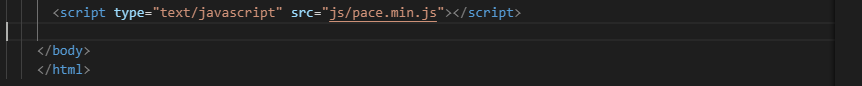
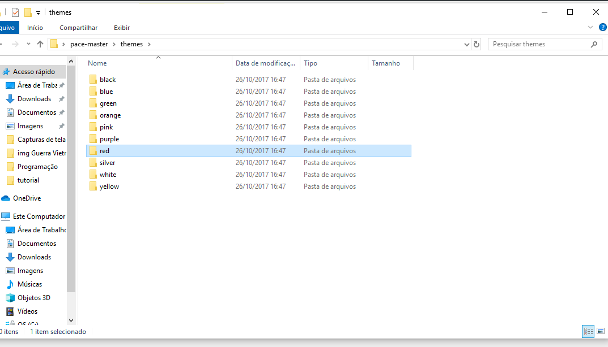
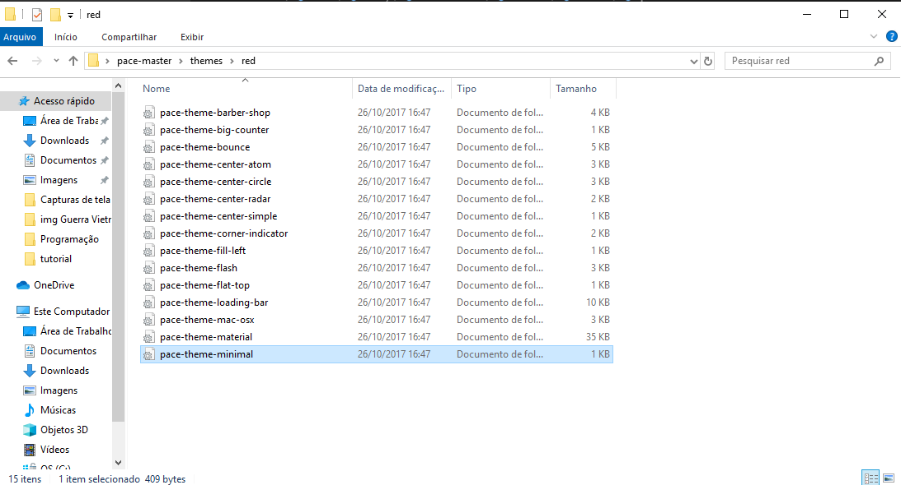
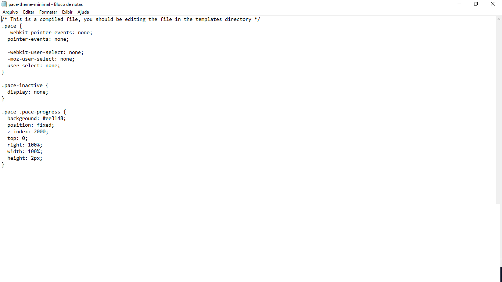
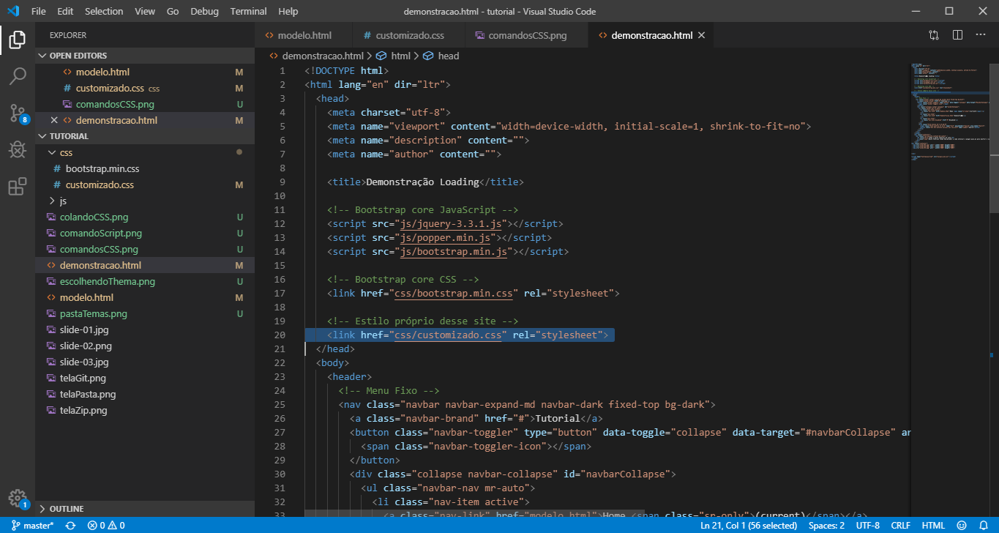

Neste tutorial você irá aprender a como utilizar o plugin pace.js para mostrar o carregamento da tela em funcionamento
O link para Download está no GitHub da empresa HubSpot. Faça o Download da pasta ZIP!
Pegue o arquivo pace.min.js e mova para a pasta JS do seu projeto
Segue um exemplo...
Inclua no final do seu código o seguinte comando (Fique atento no caminho do "scr"!):
Com isto ainda não é possivel visualizar o plugin em funcionamento, é necessário adicionar um tema. Para tanto, vá a pasta pace-master, entre no diretório "themes" e escolha a cor que mais lhe agrada. É possivel visualizar os temas no site da empresa. Segue um print de exemplo:
Cada pasta possui comandos CSS, copie e cole em seu arquivo CSS
Este é um comando CSS já pronto para colar no seu projeto.
Não se esqueça de referenciar o arquivo CSS na tela que deseja. Fique atento ao caminho de importação!
